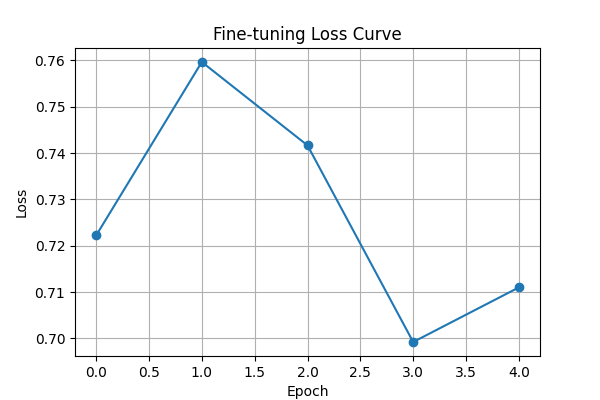

Note
Go to the end to download the full example code or to run this example in your browser via Binder.
Transfer Learning with EEGDash#
Objective: Learn how to fine-tune a pre-trained EEG model on a new small dataset.
Scenario: You have a model pre-trained on a large dataset (Dataset A). You want to adapt it to a new, smaller dataset (Dataset B) without training from scratch. This is useful when you have limited data for your specific task.
Setup#
import copy
import numpy as np
import torch
import torch.nn as nn
import torch.nn.functional as F
from torch.utils.data import DataLoader, TensorDataset
from braindecode.models import EEGConformer
import matplotlib.pyplot as plt
# Configuration
RANDOM_SEED = 42
torch.manual_seed(RANDOM_SEED)
np.random.seed(RANDOM_SEED)
DEVICE = torch.device("cuda" if torch.cuda.is_available() else "cpu")
Simulating Data#
For this tutorial, we will simulate two datasets: 1. Source Dataset (Large): Represents the ample data we used for pre-training. 2. Target Dataset (Small): Represents our new, limited dataset.
def generate_dummy_data(n_samples, n_classes=2):
# Simulate (Samples, Channels, Time)
X = torch.randn(n_samples, 24, 256)
# Generate labels: 0 or 1
y = torch.randint(0, n_classes, (n_samples,))
return TensorDataset(X, y)
source_dataset = generate_dummy_data(n_samples=200) # "Large" pre-training set
target_dataset = generate_dummy_data(n_samples=40) # "Small" target set
Pre-training the Model#
First, we define our base model and train it on the “Source” dataset. In a real scenario, you might load a saved checkpoint here.
model = EEGConformer(
n_chans=24,
n_outputs=2,
n_times=256,
sfreq=128,
).to(DEVICE)
print("Pre-training on Source Dataset (simulated)...")
# (Skipping actual heavy training loop for tutorial brevity, assuming model is trained)
# Let's save the initial state to compare later
pretrained_state = copy.deepcopy(model.state_dict())
print("Pre-training complete.")
Pre-training on Source Dataset (simulated)...
Pre-training complete.
Transfer Learning Strategy#
To perform transfer learning, we typically: 1. Freeze the feature extractor (the early layers) so their weights don’t change. 2. Replace the classification head (the final layers) to match our new task (or just re-initialize it). 3. Fine-tune the model on the new dataset.
# 1. Freeze Feature Extractor
# For Conformer, we freeze everything except the final fully connected layer.
for param in model.parameters():
param.requires_grad = False
# 2. Replace/Unfreeze Classification Head
# The Conformer's final layer is usually named `final_layer`.
# We re-initialize it. This implicitly sets requires_grad=True for these new weights.
model.final_layer = nn.Linear(model.final_layer.in_features, 2).to(DEVICE)
print("\nModel Parameters Status:")
for name, param in model.named_parameters():
if param.requires_grad:
print(f" {name}: Trainable")
# else: print(f" {name}: Frozen")
Model Parameters Status:
final_layer.weight: Trainable
final_layer.bias: Trainable
Fine-tuning#
Now we train only the head on the Target Dataset.
optimizer = torch.optim.AdamW(model.parameters(), lr=0.001)
train_loader = DataLoader(target_dataset, batch_size=10, shuffle=True)
losses = []
model.train()
print("\nFine-tuning on Target Dataset...")
for epoch in range(5):
epoch_loss = 0
for x_batch, y_batch in train_loader:
x_batch, y_batch = x_batch.to(DEVICE), y_batch.to(DEVICE)
optimizer.zero_grad()
output = model(x_batch)
loss = F.cross_entropy(output, y_batch)
loss.backward()
optimizer.step()
epoch_loss += loss.item()
avg_loss = epoch_loss / len(train_loader)
losses.append(avg_loss)
print(f"Epoch {epoch + 1}/5 | Loss: {avg_loss:.4f}")
Fine-tuning on Target Dataset...
Epoch 1/5 | Loss: 0.7222
Epoch 2/5 | Loss: 0.7596
Epoch 3/5 | Loss: 0.7417
Epoch 4/5 | Loss: 0.6992
Epoch 5/5 | Loss: 0.7110
Results#
plt.figure(figsize=(6, 4))
plt.plot(losses, marker="o")
plt.title("Fine-tuning Loss Curve")
plt.xlabel("Epoch")
plt.ylabel("Loss")
plt.grid(True)
plt.show()
print("\nTransfer Learning Complete!")
print(
"The model effectively adapted to the new domain by updating only the classification head."
)

Transfer Learning Complete!
The model effectively adapted to the new domain by updating only the classification head.
Total running time of the script: (0 minutes 0.313 seconds)